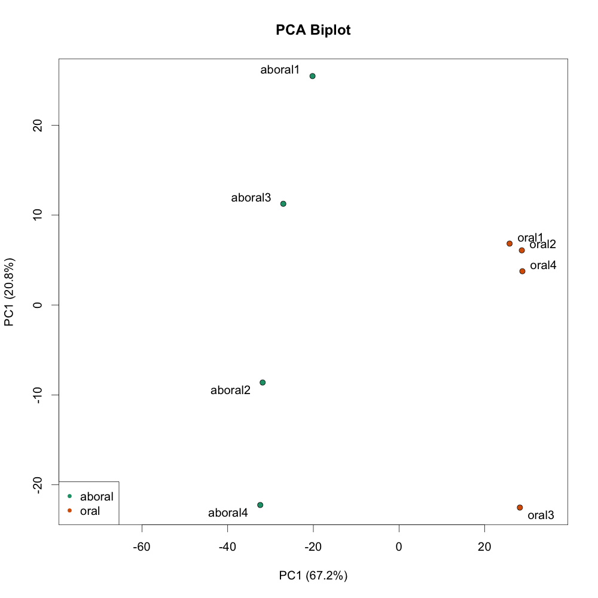
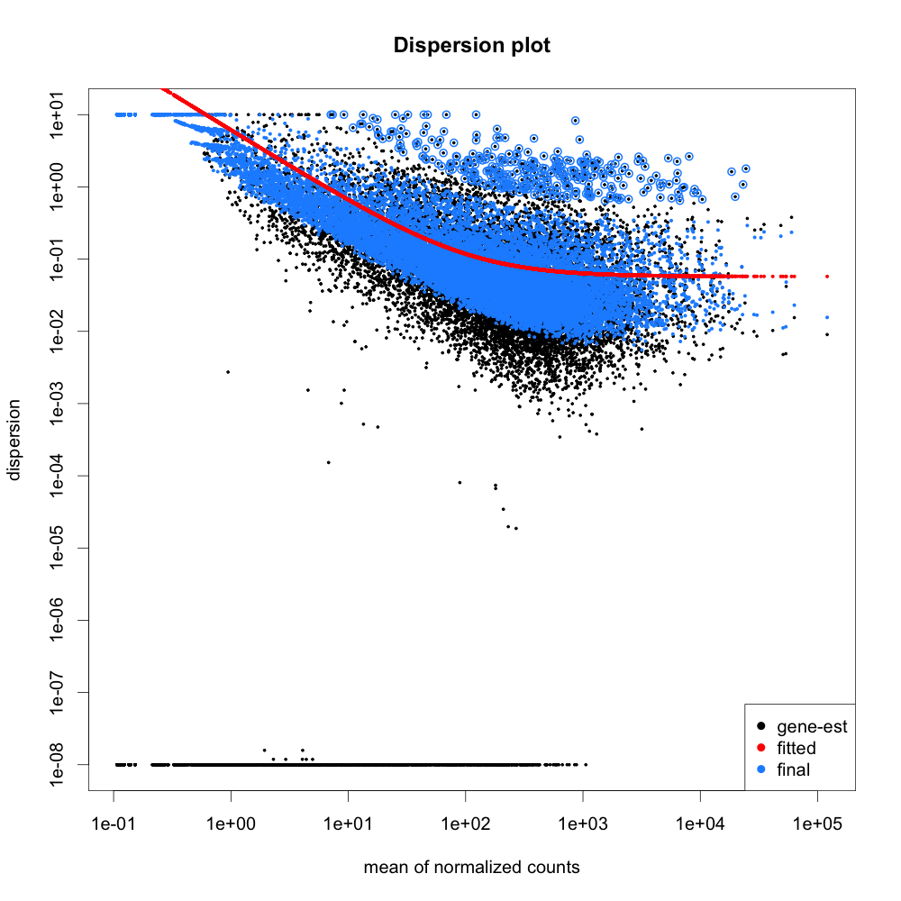
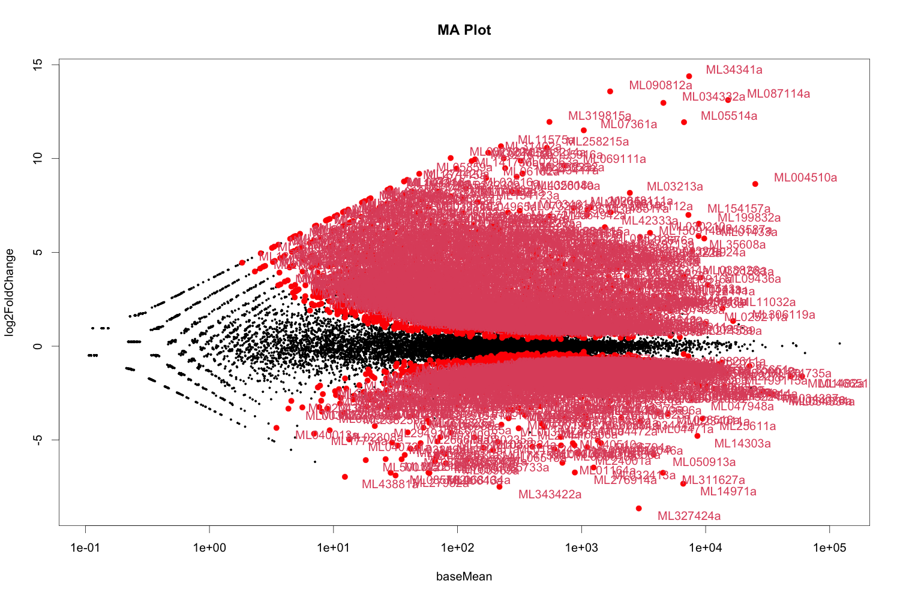
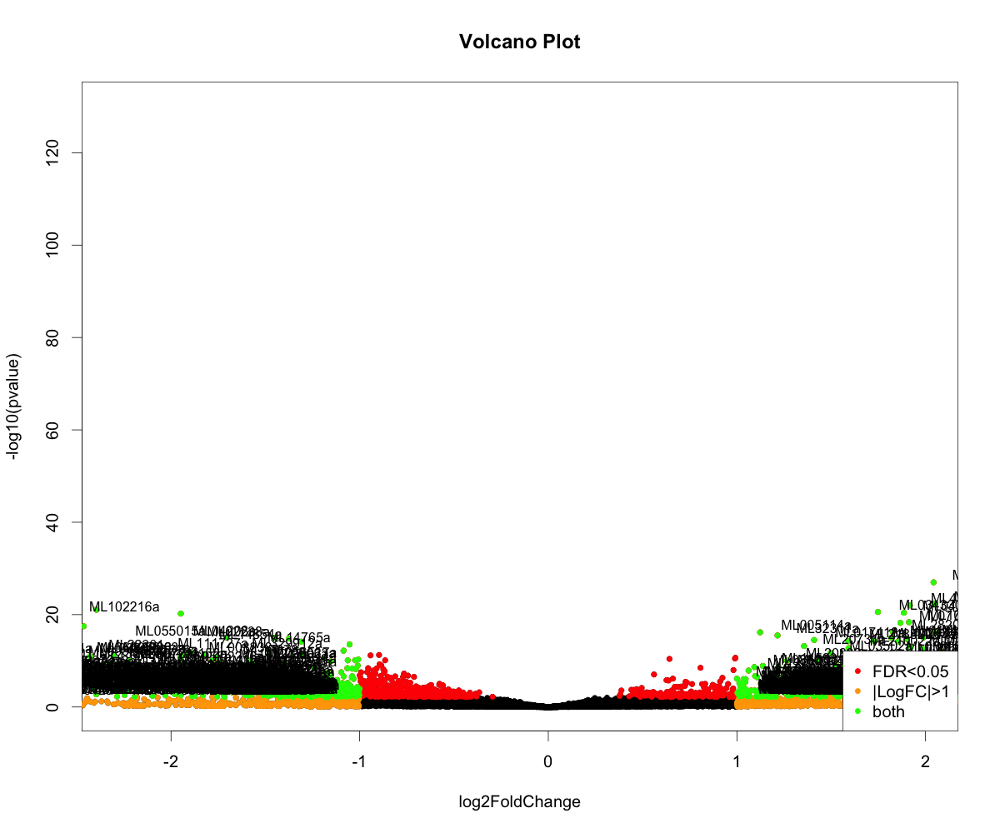

# Import data from featureCounts
countdata <- read.table("Mnemiopsis_count_data.csv", header=TRUE, row.names=1,sep=",")
coldata <- read.table("Mnemiopsis_col_data.csv", header=TRUE, row.names=1,sep=",")Final Project-Dataset #3
Final Project-Dataset #3_Mudra Patel
1) Build hierarchical trees based on the columns and for the rows (exclude rows that are “low” expression)
## make a matrix of only highly expressed genes
data_subset <- as.matrix(countdata[rowSums(countdata)>100000,])
head(data_subset) aboral1 aboral2 aboral3 aboral4 oral1 oral2 oral3 oral4
ML00017a 52713 57824 59132 60254 59242 47001 48346 47841
ML001110a 17151 17236 17159 18129 14732 12573 11963 11931
ML004510a 212 81 38 201 24068 31856 54522 69484
ML006118a 16627 17784 20529 18605 24688 13723 14378 15644
ML00748a 13017 14912 16402 14870 19891 11910 11157 12492
ML009129a 11937 12540 13180 11700 22200 10039 8971 11033## distance matrix by converting pearson correlation to a distance for rows
dm <- as.dist((1-cor(t(data_subset),method=c("pearson")))/2)
my_hclust_gene <- hclust(dm, method = "complete")
library(dendextend)
---------------------
Welcome to dendextend version 1.16.0
Type citation('dendextend') for how to cite the package.
Type browseVignettes(package = 'dendextend') for the package vignette.
The github page is: https://github.com/talgalili/dendextend/
Suggestions and bug-reports can be submitted at: https://github.com/talgalili/dendextend/issues
You may ask questions at stackoverflow, use the r and dendextend tags:
https://stackoverflow.com/questions/tagged/dendextend
To suppress this message use: suppressPackageStartupMessages(library(dendextend))
---------------------
Attaching package: 'dendextend'The following object is masked from 'package:stats':
cutreepar(mar=c(5,5,5,12))
nPar <- list(lab.cex = 0.6, pch = c(NA, 19),cex = 0.7, col = "blue")
ePar = list(col = 2:3, lwd = 2:1)
plot(as.dendrogram(my_hclust_gene),nodePar=nPar,
edgePar=ePar,horiz=TRUE)
## distance matrix by converting pearson correlation to a distance for columns
dmt <- as.dist((1- cor(data_subset,method=c("pearson")))/2)
my_hclust_gene_t <- hclust(dmt, method = "complete")
#library(dendextend)
par(mar=c(5,5,5,12))
nPar <- list(lab.cex = 0.6, pch = c(NA, 19),cex = 0.7, col = "blue")
ePar = list(col = 2:3, lwd = 2:1)
plot(as.dendrogram(my_hclust_gene_t),nodePar=nPar,
edgePar=ePar,horiz=TRUE)
2) Draw a heat map of the expression data
## make a matrix of only highly expressed genes
data_sample <- as.matrix(countdata[rowSums(countdata)>200000,])
data_sample aboral1 aboral2 aboral3 aboral4 oral1 oral2 oral3 oral4
ML00017a 52713 57824 59132 60254 59242 47001 48346 47841
ML01482a 32503 90804 83222 111860 15018 11845 36717 22066
ML01737a 29549 34545 35987 34865 36571 23911 25538 25736
ML020045a 80445 48643 60380 45170 65580 54406 35861 48147
ML034334a 23288 76895 65076 94170 4216 6801 14845 10235
ML034336a 25116 74297 59568 84219 5130 6048 14005 9833
ML034337a 23833 65985 54903 68637 4151 5805 13277 9639
ML04011a 49536 55951 56601 47869 64225 50041 44420 41929
ML07727a 28373 29857 31817 31890 37661 24502 23177 25177
ML174731a 70893 3135 22080 185 40422 32876 3125 27576
ML18558a 42189 48687 45877 43513 45029 33798 41173 34251
ML20395a 122707 131017 136282 111388 163380 101792 101421 109944
ML26358a 61229 93272 78693 78310 62893 46232 49534 47733
ML46651a 125638 105808 65907 93351 16236 10449 22838 58247library(pheatmap)
## function to scale values in a list
cal_z_score <- function(x){
(x - mean(x)) / sd(x)
}
##scale each row, to create normalized data
data_sample_norm <- t(apply(data_sample, 1,cal_z_score))
pheatmap(data_sample_norm)
3) Use DESeq2 to analyse this data
#install.packages('calibrate')
#install.packages('DESeq2')
#install.packages('RColorBrewer')
#install.packages('gplots')
#install.packages('genefilter')
library(calibrate)Loading required package: MASSlibrary(DESeq2)Warning: package 'DESeq2' was built under R version 4.2.2Loading required package: S4VectorsWarning: package 'S4Vectors' was built under R version 4.2.2Loading required package: stats4Loading required package: BiocGenerics
Attaching package: 'BiocGenerics'The following objects are masked from 'package:stats':
IQR, mad, sd, var, xtabsThe following objects are masked from 'package:base':
anyDuplicated, aperm, append, as.data.frame, basename, cbind,
colnames, dirname, do.call, duplicated, eval, evalq, Filter, Find,
get, grep, grepl, intersect, is.unsorted, lapply, Map, mapply,
match, mget, order, paste, pmax, pmax.int, pmin, pmin.int,
Position, rank, rbind, Reduce, rownames, sapply, setdiff, sort,
table, tapply, union, unique, unsplit, which.max, which.min
Attaching package: 'S4Vectors'The following objects are masked from 'package:base':
expand.grid, I, unnameLoading required package: IRangesLoading required package: GenomicRangesWarning: package 'GenomicRanges' was built under R version 4.2.2Loading required package: GenomeInfoDbWarning: package 'GenomeInfoDb' was built under R version 4.2.2Loading required package: SummarizedExperimentLoading required package: MatrixGenericsLoading required package: matrixStats
Attaching package: 'MatrixGenerics'The following objects are masked from 'package:matrixStats':
colAlls, colAnyNAs, colAnys, colAvgsPerRowSet, colCollapse,
colCounts, colCummaxs, colCummins, colCumprods, colCumsums,
colDiffs, colIQRDiffs, colIQRs, colLogSumExps, colMadDiffs,
colMads, colMaxs, colMeans2, colMedians, colMins, colOrderStats,
colProds, colQuantiles, colRanges, colRanks, colSdDiffs, colSds,
colSums2, colTabulates, colVarDiffs, colVars, colWeightedMads,
colWeightedMeans, colWeightedMedians, colWeightedSds,
colWeightedVars, rowAlls, rowAnyNAs, rowAnys, rowAvgsPerColSet,
rowCollapse, rowCounts, rowCummaxs, rowCummins, rowCumprods,
rowCumsums, rowDiffs, rowIQRDiffs, rowIQRs, rowLogSumExps,
rowMadDiffs, rowMads, rowMaxs, rowMeans2, rowMedians, rowMins,
rowOrderStats, rowProds, rowQuantiles, rowRanges, rowRanks,
rowSdDiffs, rowSds, rowSums2, rowTabulates, rowVarDiffs, rowVars,
rowWeightedMads, rowWeightedMeans, rowWeightedMedians,
rowWeightedSds, rowWeightedVarsLoading required package: BiobaseWelcome to Bioconductor
Vignettes contain introductory material; view with
'browseVignettes()'. To cite Bioconductor, see
'citation("Biobase")', and for packages 'citation("pkgname")'.
Attaching package: 'Biobase'The following object is masked from 'package:MatrixGenerics':
rowMediansThe following objects are masked from 'package:matrixStats':
anyMissing, rowMedianslibrary(RColorBrewer)
library(gplots)
Attaching package: 'gplots'The following object is masked from 'package:IRanges':
spaceThe following object is masked from 'package:S4Vectors':
spaceThe following object is masked from 'package:stats':
lowesslibrary(genefilter)Warning: package 'genefilter' was built under R version 4.2.2
Attaching package: 'genefilter'The following objects are masked from 'package:MatrixGenerics':
rowSds, rowVarsThe following objects are masked from 'package:matrixStats':
rowSds, rowVarsThe following object is masked from 'package:MASS':
area# Convert to matrix
countdata <- as.matrix(countdata)
head(countdata) aboral1 aboral2 aboral3 aboral4 oral1 oral2 oral3 oral4
ML000110a 69 175 141 139 108 146 133 63
ML000111a 0 0 0 0 0 1 0 0
ML000112a 1 10 8 3 2 13 6 1
ML000113a 383 546 402 471 290 190 282 317
ML000114a 188 214 257 230 289 215 162 128
ML000115a 493 455 540 501 413 403 419 452#coldata <- as.matrix(coldata)
head(coldata) type condition
aboral1 Mleidyi aboral
aboral2 Mleidyi aboral
aboral3 Mleidyi aboral
aboral4 Mleidyi aboral
oral1 Mleidyi oral
oral2 Mleidyi oral# Analysis with DESeq2 ----------------------------------------------------
# Create a coldata frame and instantiate the DESeqDataSet. See ?DESeqDataSetFromMatrix
dds <- DESeqDataSetFromMatrix(countData=countdata, colData=coldata, design=~condition)Warning in DESeqDataSet(se, design = design, ignoreRank): some variables in
design formula are characters, converting to factors# Run the DESeq pipeline
dds <- DESeq(dds)estimating size factorsestimating dispersionsgene-wise dispersion estimatesmean-dispersion relationshipfinal dispersion estimatesfitting model and testing#dispersion plot
png("qc-dispersions.png", 1000, 1000, pointsize=20)
plotDispEsts(dds, main="Dispersion plot")
dev.off()quartz_off_screen
2 #Regularized log transformation for clustering/heatmaps, etc
rld <- rlogTransformation(dds)
head(assay(rld)) aboral1 aboral2 aboral3 aboral4 oral1 oral2 oral3
ML000110a 6.376434 7.118991 6.892122 7.003155 6.720088 7.135420 7.157999
ML000111a -2.093485 -2.093899 -2.094150 -2.093171 -2.093668 -2.078391 -2.091656
ML000112a 2.155596 2.489695 2.415982 2.253515 2.199847 2.651174 2.430934
ML000113a 8.470140 8.764209 8.425282 8.719335 8.177842 7.941766 8.424595
ML000114a 7.539677 7.604800 7.742874 7.769221 7.920577 7.796731 7.641936
ML000115a 8.848361 8.712271 8.845081 8.908387 8.650671 8.788858 8.944176
oral4
ML000110a 6.439931
ML000111a -2.092289
ML000112a 2.168225
ML000113a 8.451073
ML000114a 7.347288
ML000115a 8.930342hist(assay(rld))
#Colors for plots below
(mycols <- brewer.pal(8, "Dark2")[1:length(unique(coldata$condition))])[1] "#1B9E77" "#D95F02"# DESeq2::plotPCA
pca <- function (rld, intgroup = "condition", ntop = 500, colors=NULL, legendpos="bottomleft", main="PCA Biplot", textcx=1, ...) {
require(genefilter)
require(calibrate)
require(RColorBrewer)
rv = rowVars(assay(rld))
select = order(rv, decreasing = TRUE)[seq_len(min(ntop, length(rv)))]
pca = prcomp(t(assay(rld)[select, ]))
fac = factor(apply(as.data.frame(colData(rld)[, intgroup, drop = FALSE]), 1, paste, collapse = " : "))
if (is.null(colors)) {
if (nlevels(fac) >= 3) {
colors = brewer.pal(nlevels(fac), "Paired")
} else {
colors = c("black", "red")
}
}
pc1var <- round(summary(pca)$importance[2,1]*100, digits=1)
pc2var <- round(summary(pca)$importance[2,2]*100, digits=1)
pc1lab <- paste0("PC1 (",as.character(pc1var),"%)")
pc2lab <- paste0("PC1 (",as.character(pc2var),"%)")
plot(PC2~PC1, data=as.data.frame(pca$x), bg=colors[fac], pch=21, xlab=pc1lab, ylab=pc2lab, main=main, ...)
with(as.data.frame(pca$x), textxy(PC1, PC2, labs=rownames(as.data.frame(pca$x)), cex=textcx))
legend(legendpos, legend=levels(fac), col=colors, pch=20)
}
png("qc-pca.png", 1000, 1000, pointsize=20)
pca(rld, colors=mycols, intgroup="condition", xlim=c(-75, 35))
dev.off()quartz_off_screen
2 #differential expression results
res <- results(dds)
table(res$padj<0.05)
FALSE TRUE
12365 2129 #Ordered by adjusted p-value
res <- res[order(res$padj), ]
#Merging with normalized count data
resdata <- merge(as.data.frame(res), as.data.frame(counts(dds, normalized=TRUE)), by="row.names", sort=FALSE)
names(resdata)[1] <- "Gene"
head(resdata) Gene baseMean log2FoldChange lfcSE stat pvalue
1 ML087114a 15168.9942 13.118379 0.5389824 24.33916 7.551609e-131
2 ML20265a 861.6430 7.369932 0.3871129 19.03820 8.231041e-81
3 ML463533a 295.6740 5.498930 0.2885512 19.05704 5.743649e-81
4 ML085213a 1265.1813 5.409610 0.2848364 18.99199 1.986482e-80
5 ML01433a 9743.3424 5.738978 0.3121950 18.38267 1.808467e-75
6 ML01248a 218.7848 5.619066 0.3062942 18.34532 3.597888e-75
padj aboral1 aboral2 aboral3 aboral4 oral1
1 1.094530e-126 2.822659 7.984582 1.712278 0.9837522 17974.2612
2 3.976690e-77 2.822659 13.307637 6.849113 18.6912920 1740.9529
3 3.976690e-77 8.467977 20.405043 9.417530 12.7887787 547.3138
4 7.198019e-77 47.044314 90.491929 42.806957 52.1388672 1902.3050
5 5.242384e-72 212.640300 333.578090 415.227478 471.2173091 14912.2377
6 8.691298e-72 9.408863 4.435879 7.705252 13.7725310 443.7184
oral2 oral3 oral4
1 20852.1073 42894.6122 39617.4697
2 1234.0512 2117.2286 1759.2404
3 515.7229 692.7338 558.5421
4 2200.4900 3194.1369 2592.0367
5 12982.9991 22573.6083 26045.2309
6 430.1302 473.2055 367.9020#Exporting results into a csv file
write.csv(resdata, file="diffexpr-results.csv")#Examine plot of p-values
hist(res$pvalue, breaks=50, col="grey")
#DESeq2::plotMA
maplot <- function (res, thresh=0.05, labelsig=TRUE, textcx=1, ...) {
with(res, plot(baseMean, log2FoldChange, pch=20, cex=.5, log="x", ...))
with(subset(res, padj<thresh), points(baseMean, log2FoldChange, col="red", pch=20, cex=1.5))
if (labelsig) {
require(calibrate)
with(subset(res, padj<thresh), textxy(baseMean, log2FoldChange, labs=Gene, cex=textcx, col=2))
}
}
png("diffexpr-maplot.png", 1500, 1000, pointsize=20)
maplot(resdata, main="MA Plot")Warning in xy.coords(x, y, xlabel, ylabel, log): 1436 x values <= 0 omitted from
logarithmic plotdev.off()quartz_off_screen
2 ## Volcano plot with genes labeled significant
volcanoplot <- function (res, lfcthresh=2, sigthresh=0.05, main="Volcano Plot", legendpos="bottomright", labelsig=TRUE, textcx=1, ...) {
with(res, plot(log2FoldChange, -log10(pvalue), pch=20, main=main, ...))
with(subset(res, padj<sigthresh ), points(log2FoldChange, -log10(pvalue), pch=20, col="red", ...))
with(subset(res, abs(log2FoldChange)>lfcthresh), points(log2FoldChange, -log10(pvalue), pch=20, col="orange", ...))
with(subset(res, padj<sigthresh & abs(log2FoldChange)>lfcthresh), points(log2FoldChange, -log10(pvalue), pch=20, col="green", ...))
if (labelsig) {
require(calibrate)
with(subset(res, padj<sigthresh & abs(log2FoldChange)>lfcthresh), textxy(log2FoldChange, -log10(pvalue), labs=Gene, cex=textcx, ...))
}
legend(legendpos, xjust=1, yjust=1, legend=c(paste("FDR<",sigthresh,sep=""), paste("|LogFC|>",lfcthresh,sep=""), "both"), pch=20, col=c("red","orange","green"))
}
png("diffexpr-volcanoplot.png", 1200, 1000, pointsize=20)
volcanoplot(resdata, lfcthresh=1, sigthresh=0.05, textcx=.8, xlim=c(-2.3, 2))
dev.off()quartz_off_screen
2 a) which are the most significantly changing genes in this dataset?
there are couple of column that we can look at from the “diffexpr-results.csv” file to indicate which genes are significantly changing. Looking at the log2FoldChange column a positive fold change value indicates an increase of expression, while a negative fold change indicates a decrease in expression. The table is organized by the adjusted p-value column which indicates whether the gene analysed is likely to be differentially expressed in that comparison.This applies to each gene individually, assuming that the gene was tested on its own without consideration that all other genes were also tested. 2129 genes are significant with an adjusted p-value <0.05. What we noticed is that the FDR threshold on it's own doesn't appear to be reducing the number of significant genes. With large significant gene lists it can be hard to extract meaningful biological relevance. To help increase stringency, one can also add a fold change threshold.
### Set thresholds padj.cutoff <- 0.05 lfc.cutoff <- 0.58From the deseq2 analysis we can assume that the most significantly changing genes are:-


b) which genes are most consistently highly expressed in these datasets they are the “house-keeping” genes?

c) How consistent are these results with the analysis you did in the midterm project?
The data varies a bit from the midterm project however some data is pretty similar. For example, ML034332a was classified as a down regulated gene in the midterm proejct and based on the Deseq2 analysis (MA Plot) it is an outlier gene. Also when the gene were organized via expresion for column vs row basis in the midterm project it showed ‘ML004510a’ to be in the top 5 varied gene however this gene is also another example of an outlier.
d) What else can you say about the data in terms of consistency, and the results that you find from your analyses. The question is open-ended, think of this as your experiment, you need to write a paper based on this data so you have to figure out what kind of “story” you can tell based on this.
Principal Components Analysis (PCA) is a dimension reduction and visualization technique that is here used to project the multivariate data vector of each sample into a two-dimensional plot, such that the spatial arrangement of the points in the plot reflects the overall data (dis)similarity between the samples. The majority of variation between the samples can be summarized by the first principal component, which is shown on the x-axis. The second principal component summarizes the residual variation that isn't explained by PC1. PC2 is shown on the y-axis. The percentage of the global variation explained by each principal component is given in the axis labels. In a two-condition scenario (e.g. ABORAL vs ORAL), you might expect PC1 to separate the two experimental conditions, so for example, having all the controls on the left and all experimental samples on the right (or vice versa - the units and directionality isn't important). The secondary axis may separate other aspects of the design - cell line, time point, etc. Very often the experimental design is reflected in the PCA plot, and in this case, it is.

The resaon behind fitting a curve to the data is that different genes will have different scales of biological variability, but, over all genes, there will be a distribution of reasonable estimates of dispersion. This curve is displayed as a red line in the figure below, which plots the estimate for the expected dispersion value for genes of a given expression strength. Each black dot is a gene with an associated mean expression level and maximum likelihood estimation (MLE) of the dispersion.. This plot is a great representation of examining data after deseq2 analysis. You expect your data to generally scatter around the curve, with the dispersion decreasing with increasing mean expression levels. If you see a cloud or different shapes, then you might want to explore your data more to see if you have contamination or outlier samples.

An MA plot shows the average expression on the X-axis and the log fold change on the y-axis. This MA plot shows a high number of data points falling above the one threshold on the y-axis indicating a more significant number of genes being upregulated, while more below −1 would indicating high levels of downregulation in genes.

A volcano plot shows the log fold change on the X-axis, and the −log10−log10 of the p-value on the Y-axis (the more significant the p-value, the larger the −log10−log10 of that value will be). Looking at the x axis we can see that all the genes on the right of the 0 (positive side) are all positively expressed where as the ones plotted on the left of 0 are negatively expressed.

e) what is the most interesting pathway or gene that is responding in this study?
- ML01051a seems to show all the properties for being an outlier however it was in the top 5 of high expressed genes.